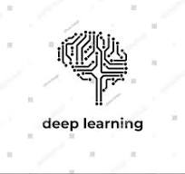

Hi, I'm Anantha Krishnan K
a Computer Science graduate passionate about Machine Learning and Data Science. I specialize in transforming data into actionable insights using tools like Python, TensorFlow, and Tableau. With hands-on experience and a drive for continuous learning, I’m excited to tackle challenges in technology and innovation. Welcome to my portfolio!
About Me
I’m Anantha Krishnan K, a passionate Computer Science graduate from Hansraj College, University of Delhi, with a strong interest in Machine Learning, Data Science, and Artificial Intelligence. My journey in the tech world began with a curiosity to understand how technology can solve real-world problems. Over the years, I’ve honed my skills through rigorous academics, hands-on projects, and impactful internships.
I’ve had the opportunity to work on diverse projects, from sales forecasting models to data visualizations, using cutting-edge tools like Python, TensorFlow, Tableau, and more. Through these experiences, I’ve developed a deep understanding of data-driven decision-making and predictive analytics. My focus lies in crafting efficient algorithms and leveraging data insights to drive innovation.
Beyond technical expertise, I pride myself on being a collaborative team player and an avid learner. I enjoy exploring emerging technologies, staying updated with the latest advancements in AI and ML, and constantly challenging myself to grow both personally and professionally.
When I’m not coding or analyzing data, I love diving into new books, exploring nature, and brainstorming creative ideas to apply my skills to meaningful projects.
Feel free to explore my portfolio, and don’t hesitate to connect if you’re interested in collaborating or discussing exciting opportunities!
Qualification
2021-2024
Bachelor of Science (Hons.). Computer Science
Hansraj College , University of Delhi
Key Contents:Data Structures and Algorithms, Machine Learning, Database Management, Artificial Intelligence
Certifications
2024
Data Science and Machine Learning Internship
YBI Foundation
Key Contents:Movie Recommendation System, Big Sales Prediction
Certifications
2024
BCG GenAI Job Simulation Internship
Forage
Key Contents:10-K and 10-Q reports, Data Engineering, Data Manipulation
Skills
I have a strong foundation in programming, with expertise in Python, JavaScript, and Java, allowing me to build efficient and scalable solutions. My proficiency in machine learning and data science is backed by hands-on experience with frameworks like TensorFlow, scikit-learn, Pandas, and NumPy. I excel in analyzing complex datasets and visualizing insights using tools such as Tableau, Power BI, Matplotlib, and Seaborn.
In addition to technical skills, I am well-versed in database management with MySQL and PostgreSQL, as well as version control using Git and GitHub. I have successfully developed and deployed predictive models and AI-driven applications that solve real-world problems. My approach is complemented by strong analytical thinking, attention to detail, and problem-solving abilities. I also prioritize effective communication and collaboration, ensuring seamless teamwork and impactful results in every project I undertake.
AI/ML

Deep Learning
Academic Projects
IoT Project
SMART HOME – Temperature Controlled Fan
2023
Developed an IoT-based smart home project to control a fan using NodeMCU and the BlynkApp.
NodeMCU with temperature sensors and a fan to enable real-time temperature monitoringandautomatic fan control.
Programmed NodeMCU using Arduino IDE to adjust the fan's speed based on temperature changes.
The result is a smart home temperature-controlled fan system that operates autonomously, adjustingthefan's speed based on temperature conditions or user-defined preferences
DAV Project
WINE QUALITY ANALYSIS
2024
Conducted a comprehensive data analysis project evaluating the quality of various wines basedontheirchemical properties.
Utilized Python libraries (Pandas, NumPy) for data cleaning and preprocessing
Performed exploratory data analysis (EDA) to uncover patterns and correlations
Developed visualizations using Matplotlib and Seaborn to represent data insights
Testimony
Aman Ahmad P V
MBA.Data Analytics in PU
"During our undergraduate years, I had the privilege of collaborating with Anantha Krishnan on an IoT project called SMART HOME - Temperature Controlled Fan. Throughout the project, I was consistently impressed by his exceptional coding and problem-solving skills. I vividly recall a critical moment just a day before the submission, where we faced what seemed like an insurmountable challenge that threatened the success of our project. However, thanks to Anantha's technical expertise and calm demeanor under pressure, we were able to overcome the obstacle and successfully complete the project. His dedication and innovative thinking make him an invaluable teammate."
Nandana V
NIMCET Aspirant
"Collaborating with Anantha Krishnan on our Wine Quality Analysis project was an enlightening experience. His deep understanding of data analytics and exploratory data analysis techniques was instrumental in uncovering insights from the wine dataset. Anantha's meticulous approach to data preprocessing and visualization ensured a comprehensive understanding of the factors influencing wine quality. His ability to translate complex data into actionable insights significantly enhanced the project's success. Working alongside him was both educational and inspiring."
Leave a Message
Quick Contact
Don’t hesitate to connect if you’re interested in collaborating or discussing exciting opportunities!